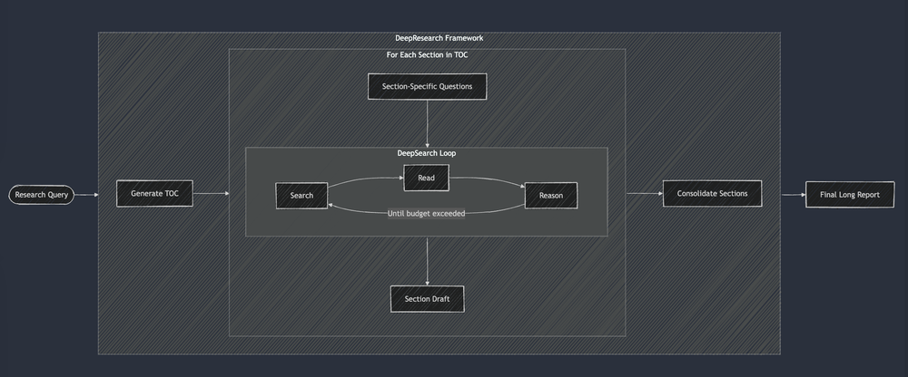

Deep Research in Hong Kong Law - Part I
Introduction
I always want to automate legal research. Because (1) I always have to do it as a legal student and (2) people often ask me about their legal problems which law school simply doesn't teach.
In the era of AI, this very much sounds like a problem typical RAG can solve. [1]
Now, I understand RAG in simple language as:
A system that automatically CTRL-C and CTRL-V something relevant to the question and pass them to LLM for answer generation.

In our context, we just need to copy the relevant legal principles from a corpus of legal rules, put them into a reasonably intelligent LLM, simple! right?
Turns out it's not. When the pool of documents [2] is large, deciding what is relevant becomes a hard problem.
Similarity search with vector embedding is the default position for most RAG system. But, you will note that embedding search has not yet replaced Google. Google will have for sure integrated it, but their search engine is clearly not built on a vector database. For
- performance issue,
- cost issue and
- that useful information retrieval is a complex field full of nuances.
The Problem Statement
Any legal advice to me involves a search problem. Given any legal related problem, the first part of the problem solving process is always finding which legal principles are relevant.
Lawyers will call this as identifying the issues. The first step is always identifying the relevant legal frameworks, before that no meaningful legal or factual issues can be laid out.
But the question is: what is relevant?
What is relevant?
Relevance is multi-dimensional. Assume you carry with you 40g of cocaine, wishing to sell your friend in Thailand, get caught in the HK airport and are charged with Trafficking in Dangerous Drugs (TDD). You are now worrying how long you might have to spend on jail.

A case can be relevant to your question for various reasons, and on different dimension:
- The age of the offender in that case is similar to you.
- It sets out the latest sentencing guideline for TDD in cocaine.
- It ruled on the general approach in determining sentence for TDD.
- It sets out mitigating factors for reducing sentence generally.
- It applied one of the mitigating factors present in your case.
- It discussed aggravating factors for increasing sentence generally.
- ...
Usually, my search strategy would look something like:
- Use keywords (e.g. the offence itself) to get a bunch of TDD sentence judgments.
- Get a general idea of the sentence range by scanning through the cases.
- Stumble across a longer case which looks like a key case of the offence.
- Take note.
- Scans which case resembles the client’s case at hand, based on different criteria listed above.
- Check them out.
- Dig out some more cases cited in cases collected so far.
- Refine my search based on what I know so far.
“What is relevant” cannot usually be determined with one single search. Instead, multiple search with different purposes has to be performed.
Proposed System
To simulate the the human search. There are five main components that I can think of:
- keyword search
- semantic search
- filtering
- LLM to use (1) and (2) and (3)
- an orchestration framework that search incrementally
Taking references from different deep research workflows proposed by a number of interesting projects, for example:
Image from Jina.ai, which I come across at The Differences between Deep Research, Deep Research, and Deep Research

Image from Anthropic at Muti-Agent Research System
Eval-first
I am sold by Eugene Yan that:
Building solid evals should be the starting point for any LLM-based system or product.
Curating high quality evaluation dataset is costly. But, ~100 data points can already provide a less subjective evaluation of the system.
The evaluation method I chose is the Nugget Recall. In simple terms, nugget is an atomic fact that should be included in an answer. Hence, we can measure the performance by counting how many “nuggets” an answer to a query contains compared to the standard list of nuggets curated by expert that should appear in relation to a query.

Image from the linked paper.
Filtering
The limitation of vector similarity search is that the bigger the search pool, the harder to retrieve relevant result.
An intuitive explanation is that the bigger the document pool, the set of relevant documents become a smaller fraction of the total pool, and get easily crowded out by other marginally relevant results.

The strategy we use to mitigate such limitation is simple: filtering[3]. Based on the query or user input, the first step we should do is to narrow down the search space.
There are multiple approaches for efficient filtering that has come to my knowledge:
- Filter by Tag
- Semantic IDs
Filter by Tag by only picking cases with tag matching the target topic, judgment type, court or offence.
But someone has to come up with the tags. Generating accurate and meaningful tag is feasible with LLM but relatively slow. Suppose it would take at least ~10s for 1 case to generate high-quality metadata. Now, 100K case means 1M seconds = 11 days, if performed consecutively!

Semantic IDs is an interesting approach explored by Google Deepmind. A semantic ID is a compact numerical sequence representation of an item’s hierarchical information (e.g. an 8-byte sequence that captures 8 levels and 256 topics) using the trie concept . The representation is learned from the dense vector embedding of an item.

Image from the linked paper.
The difference is: Semantic IDs can be a machine learning based approach that is very compact and efficient, encoding the hierarchical relationship of the documents, yet the effective use of it is still subject to further experiment; whereas, traditional filtering by tag is simple but efficient, the mechanism is well supported by most production grade database. So, we will first implement filtering by tag on a confined set of important judgments and see how it performs.
Conclusion
In this article, I have discussed the problem I want to solve in legal research and outlined my approach to the problem. In the next article, I will discuss the two of the other components of the system, i.e. keyword search and similarity search.
-
This maybe better solved in future with the Self-Retrieval LLM. But not so possible currently, as law is dynamically updated, retraining the LLM every now and then is not quite sensible in terms of costs at the time of this writing.↩︎
-
pool of documents = Case Law + Legislations in Hong Kong. ~ 150k+ Case Law (~0.5 billion tokens) and ~300k+ legislative sections. ↩︎
-
Another approach is to boost the discriminative power of the embedding model over a larger set of documents. Pure ml approach. Problem: need ample gpu resources and high quality dataset. We will see if we can do this later.↩︎
Comments